Map MySQL Output to an EDI 810 Invoice
Version 26.1.9502
Version 26.1.9502
Map MySQL Output to an EDI 810 Invoice
Overview
CData Arc contains powerful tools to retrieve targeted data from back-end databases and map this data into an outbound EDI document such as X12, EDIFACT, and so on. This guide walks through the process of creating a MySQL database-to-EDI workflow, focusing on generating an X12 810 invoice document. The sample invoice mirrors the syntax required by Amazon.
The approach and principles described in this guide are applicable to generating other EDI documents; however, there might be differences in the specific data pulled from the database and the relationships between mapped values.
This guide begins with an overview of how to accomplish the mapping in Arc, then walks through each step of the flow. See Sample Data to review the database structure, output files, and the resulting 810 document used in this article.
EDI Mapping in CData Arc
Pulling MySQL Data as XML
Arc uses XML as a common format for data transformation and manipulation. All EDI mapping flows involve converting the source data (in this case database data) and destination data (in this case an EDI file) into XML.
All Arc connectors that pull data from databases (or database-like applications) automatically format the output data as XML files. Thus, data that is pulled from a database is immediately ready to be mapped or transformed. This guide uses the MySQL connector to interface with a MySQL database.
Pulling Data Relevant for an 810 Invoice
Invoices are typically sent to trading partners in response to a purchase order (PO). When a manufacturing company receives a PO that requests a set of manufactured goods, the manufacturing company responds with an invoice to pay for the requested goods.
As a result, the data used to generate an invoice typically comes from a PO that was received earlier. This guide assumes that incoming PO data is automatically inserted into a database, so the PO database tables hold the data relevant to the 810 invoice. When you configure a MySQL connector for this flow, the MySQL connector targets the tables where the PO data is held.
POs can contain multiple line items, and a typical database setup stores line item data in a LineItems table that is separate from the PurchaseOrders table. The LineItems table has a foreign key to the PurchaseOrders table so it can tell which line items are associated with which PO, but data must be pulled from both tables in order to retrieve all of the necessary information to populate an 810 invoice.
Defining the Select Action contains the steps necessary to pull from a PurchaseOrders table and a LineItems table (with the appropriate foreign key relationship) at the same time.
Representing an EDI Document as XML
In order to map the XML data pulled from a database into an EDI document, the EDI document must also be represented as XML. Arc includes many different connectors to convert between EDI and XML formats (X12 and EDIFACT are two). This guide focuses on mapping an X12 document, so the X12 connector is used to generate an XML representation of the target 810 document.
It is important to have a sample output document (such as a sample 810) prior to creating the mapping flow. The sample document is used to create the XML model for the mapping step. You can either upload your own sample document, or select from a list of built-in templates.
Transforming XML Structures
Once the source and destination formats have been represented as XML, the powerful XML Map connector is used to transform one XML structure into the other.
The XML Map connector requires sample Source and Destination template files, which represent the starting and ending XML structures respectively. The XML output pulled from the database is the source file, and the XML representation of an X12 810 document (generated by passing a sample 810 through an X12 connector) is the destination file.
Once you specify the source and destination structures, the XML Map connector’s visual designer is populated with the two structures. Drag and drop elements from the source structure onto elements in the destination structure to create a mapping relationship between them. This mapping step requires an understanding of the EDI structure so that the appropriate elements are included in the output file.
The XML Map connector includes value formatters, conditional logic, and even custom scripting to manipulate and compute data during the mapping process. See Mapping for more information on these features.
Once you create the mapping relationship, the XML Map connector can automatically convert any files that match the source XML structure into a file with the destination XML structure. In this example, the data pulled from a database is automatically converted into an XML model of an X12 810 document. The final step is to take the XML model of an 810 XML file and convert it to an actual 810 document, which is easily accomplished with the X12 connector.
Creating the Mapping Flow
This section contains each step to create a flow in Arc that retrieves database output and maps it to an 810 invoice.
Step 1: The MySQL Connector
The first step of a mapping flow is to configure a MySQL connector to pull the relevant data from a MySQL database.
Establishing a Connection
Click Flows on the navbar, then add an instance of the MySQL connector to a workspace canvas (see Designing a Flow for instructions). For production flows, the MySQL connector instance name should include the target MySQL database and context information about the data being pulled or pushed into the database (for example, MySQL_Invoice_tradingPartner). In this flow the connector instance name is MySQL_Output for simplicity.
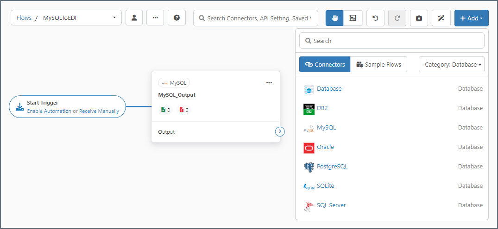
Choose a Connection from the drop-down list, or click the Create button to create a new connection. The following image shows the Add Connection page. See Establish a Connection for details on each of the fields.
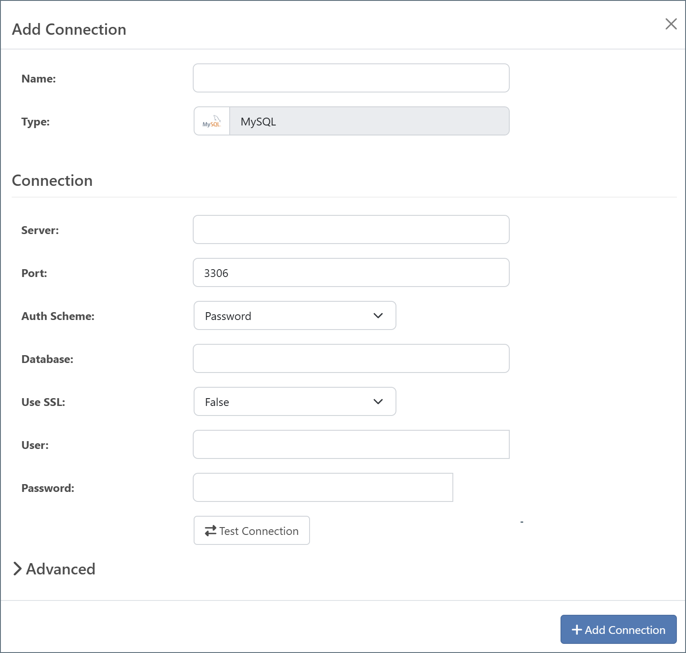
Defining the Select Action
Once a connection is established, use the Select action to pull the relevant data from the database. As mentioned in Pulling Data Relevant for an 810 Invoice, the data is pulled from a parent PurchaseOrders table and a child LineItems table.
On the MySQL connector Settings tab, set Action to Select. In the Select Configuration section, click Add to configure the action. This brings up a list of tables in the database. Select the parent table (with PO data). You will add the child table (with line item data) later. In this example the PO table is test_purchase_orders, and selecting this table populates the Columns portion of the configuration section.

Use the editor to select which columns in the table to retrieve; this guide includes all of the columns in the output XML.
One of the table columns is Processed, which holds the value 0 if a record has not been processed, and 1 if it has. When POs are inserted into the table, it is expected that the Processed column is set to 0. The Select Configuration should only pull records if the Processed column is 0, and it should update this column with a value of 1 after successfully pulling a record.
To accomplish this, apply a filter to only pull records where Processed = 0. In the Filter section of the editor, add a new rule:
- Set the left dropdown to the column to check—
Processedin our example - Choose the logical operator in the middle dropdown—
Equalsin our example - Set the right input to the value to compare against the column—
0in our example
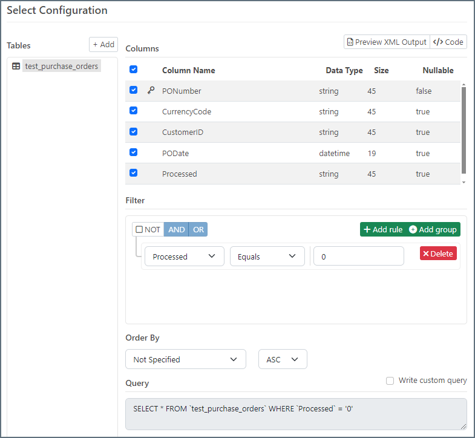
In addition to filtering records by the Processed column, the column needs to be updated so that records are not pulled more than once. The Advanced section of the editor allows you to specify a column that should be updated when rows are successfully pulled from the database.
In this case, the Processed column should be updated with the value 1.
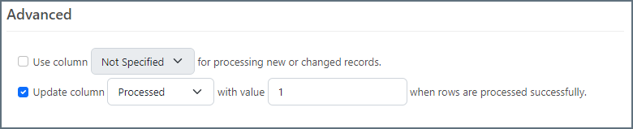
Now that the appropriate records will be pulled from the test_purchase_orders table, you must configure the Select Configuration section to pull the line items associated with each PO. In this example, the line item data is held in the test_po_line_items table.
In Select Configuration, click Add to add a new child table. Select the test_po_line_items table. The editor automatically updates the table tree structure in the left panel. As with the first table, you can select specific columns from the test_po_line_items for output; this guide includes all of the columns.
When the MySQL connector pulls a PO record from the test_purchase_orders table, it also looks to pull records from the test_po_line_items table. Only line items associated with the current PO should be pulled, so you must apply a WHERE constraint on the child table.
In this example, the PONumber column in the test_po_line_items table corresponds to a PONumber column in the test_purchase_orders table. Records should only be included in the output for a PO record when the PONumber from a line item matches the PONumber from a PO.
To accomplish this, add a new rule to the Filter section of the test_po_line_items configuration:
- Set the left dropdown to the column in the child table to check—
PONumberin our example - Set the middle dropdown to
Equals - Set the right input to reference the parent table by clicking the dropdown arrow and selecting
REF(the$symbol appears to indicate a reference) - Set the last input to the column in the parent table to compare—
PONumberagain in our example

The configuration is now complete, so you should save it in the MySQL connector.
Once the configuration is saved, you can pull data from the database in two ways. If Receive Automation is enabled on the Automation tab of the MySQL connector, the connector automatically attempts to pull unprocessed POs (and the associated line items) according to the Receive Interval. Alternatively, you can manually pull records by navigating to the Output tab and clicking Receive. In both cases, the connector runs a SELECT query against the configured table(s) and produces an output message containing the selected data.
Select Action Output as XML
After a Select action is defined, the MySQL connector represents the output as XML. To view the XML model of the output, click the </> Code button:
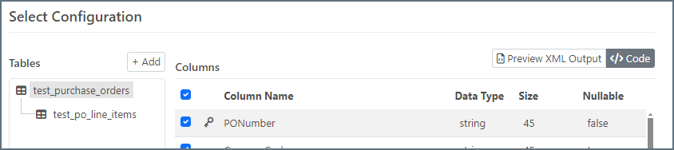
When the MySQL connector pulls data from the database, it uses the retrieved values to populate an XML document with this structure. Sub-structures in the XML file can repeat. For example, if multiple line items are pulled for a single PO, the XML sub-section for the test_po_line_items table repeats for each line item.
Now this XML structure must be mapped to an XML structure representing an X12 810 invoice. Then the resulting mapped XML can be converted directly to an EDI document.
Note: The mapping used for this guide is in Database XML Structure.
Step 2: The X12 Connector
The X12 connector performs two roles in this mapping flow.
- It is used to generate an XML representation of an 810 invoice. This can be done either by uploading a sample file in the X12 connector’s Input tab or or by using the built-in template files that are shipped with the X12 connector. The uploaded and built-in template files are shown in the Destination field in the XML Map connector, after the X12 connector is attached to the XML Map connector (prefixed by
connector://). - The X12 connector performs the last step in the flow when it converts the XML generated by the XML Map connector into an X12 document.
Add an instance of the X12 connector to the canvas. X12 connector instance names should typically include the name of the trading partner sending X12 documents. In this flow the instance name is XML_To_X12 for simplicity.
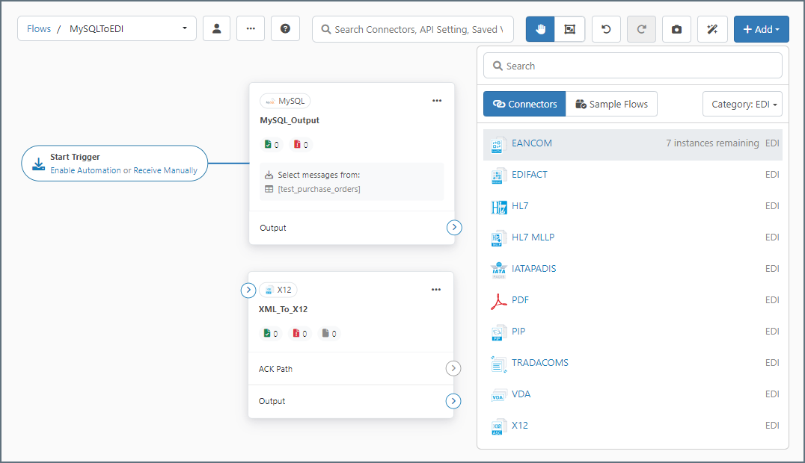
Upload a Test File
If you already have a sample 810 invoice file, the Upload Test File feature simplifies the process of generating an XML model for the target EDI document. Open the X12 connector Input tab and click More > Upload Files:
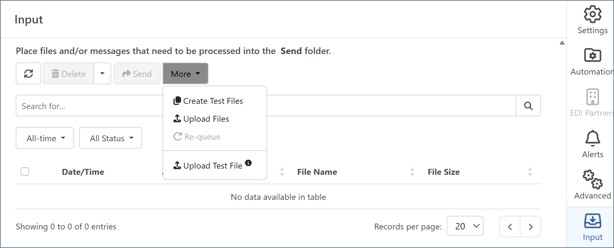
Browse to a sample 810 invoice to upload. The X12 connector generates an XML model of this document internally, which the XML Map connector can automatically detect. Since the model is stored internally, the external appearance and configuration of the connector does not change.
If you do not have a sample 810 file, when you connect the XML Map connector to the X12 connector, the Destination File field on the XML Map connector Settings tab is populated with a list of built-in template files that you can choose from. See Choose a Built-In Template File for more information.
Note: The sample 810 document used for this guide is in X12 810.
Configuring the X12 Connector
In addition to creating a sample XML model, the X12 connector is used to convert XML mapped by the XML Map connector into the output EDI file. It also adds interchange and functional group data to the document according to the settings configured in the connector. So it is important to configure the X12 connector with settings specific to the partner who will receive the outbound X12 810 document.
On the X12 connector Settings tab, set the Translation Type property to XML-to-X12. When operating in this mode, input to the X12 connector should be XML that is structured as an EDI document. Using the Create Test Files option from the previous step in the XML Map connector ensures that the input XML matches this specific structure.
By default, Dynamically process partners is checked. This means that the connector automatically identifies and tracks trading partner relationships from EDI transactions. In this case, no manual partner configuration is required because the connector dynamically manages all partners within your license limit. This guide uses the default setting. See X12 Connector Settings to learn what is required if you uncheck this.
The connector also fills in interchange and functional group values based on the configured settings. However, your trading partner might require further interchange (ISA) and functional group (GS) values to successfully receive the 810. Communicate clearly with your trading partner to find out what header elements are required. See the X12 connector documentation for more information.
Step 3: The XML Map Connector
Now that the MySQL connector and X12 connector have generated an XML model of the input and output data respectively, use the XML Map connector to transform one XML structure into the other.
Add the XML Map connector to the flow, then connect the MySQL connector to the XML Map connector and the XML Map connector to the X12 connector.
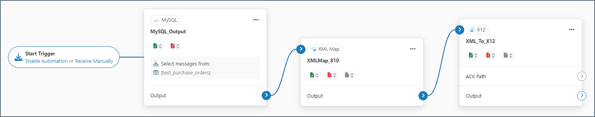
Configuring the XML Map Connector
On the XML Map connector XML Map tab, find the Source and Destination template file fields. The connector detects the XML model from the MySQL connector Select Configuration as an available source template file, and the XML model from the X12 connector test file as an available destination template file. If either option is not available, verify that the test file and configuration were appropriately saved and that the connectors are connected on the canvas.
Once you specify the template files, the XML Map visual designer automatically populates with the XML structures of the MySQL Select configuration and the sample X12 810 file.
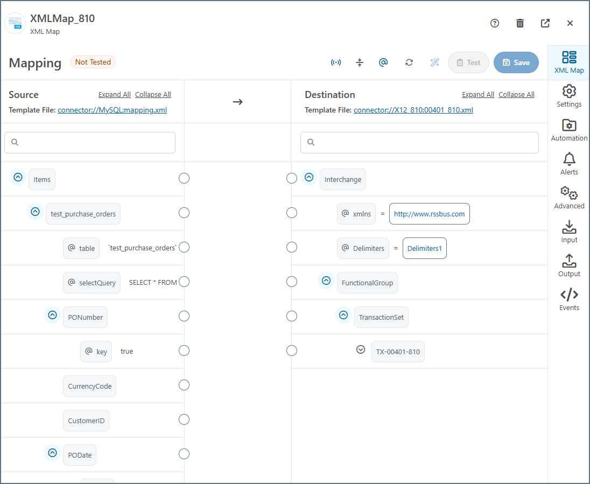
Tip: If the Interchange and FunctionalGroup elements in the destination structure have Meta elements, you can safely delete them. The X12 connector applies the relevant metadata to the ISA and GS segments when converting the XML to EDI.
Understanding the XML Structures
Creating the right mapping relationships in the XML Map connector requires understanding how the source and destination structures are represented in XML.
There are two types of XML elements (nodes) in the structures. Parent and Leaf nodes define the hierarchical structure of XML data, where parent nodes group related elements and leaf nodes represent the actual data values to be mapped. Use the expand and collapse buttons next to a parent node to show or hide its leaves. See Mapping Nodes for more information.
In the MySQL XML, each parent node represents a table from which data is being pulled, and each leaf node represents a column in that table. In the 810 XML, each EDI loop and segment is a parent node, and each individual EDI element is a leaf node.
Creating the Mapping
Once you configure the XML Map connector with the source and destination structures, create the mapping by dragging and dropping nodes in the designer.
Mappings are created in two primary steps:
- Creating the
Foreachlooping relationships between parent nodes - Mapping values between leaf nodes in the established
Foreachloops
Creating Foreach Loops
Foreach relationships mean that each time an element appears in the source, a new XML structure is created in the destination. For example, if ElementA in the source is mapped to ElementB in the destination, each occurrence of ElementA in an input file results in an instance of ElementB (and all of ElementB’s children) in the output file.
In this case, each record pulled from the PO table (test_purchase_orders) results in a new transaction (TX) in the resulting EDI, and each record pulled from the line items table (test_po_line_items) results in a new IT1Loop. Drag the test_purchase_orders element onto the TX-00401-810 element, as shown in the following image:
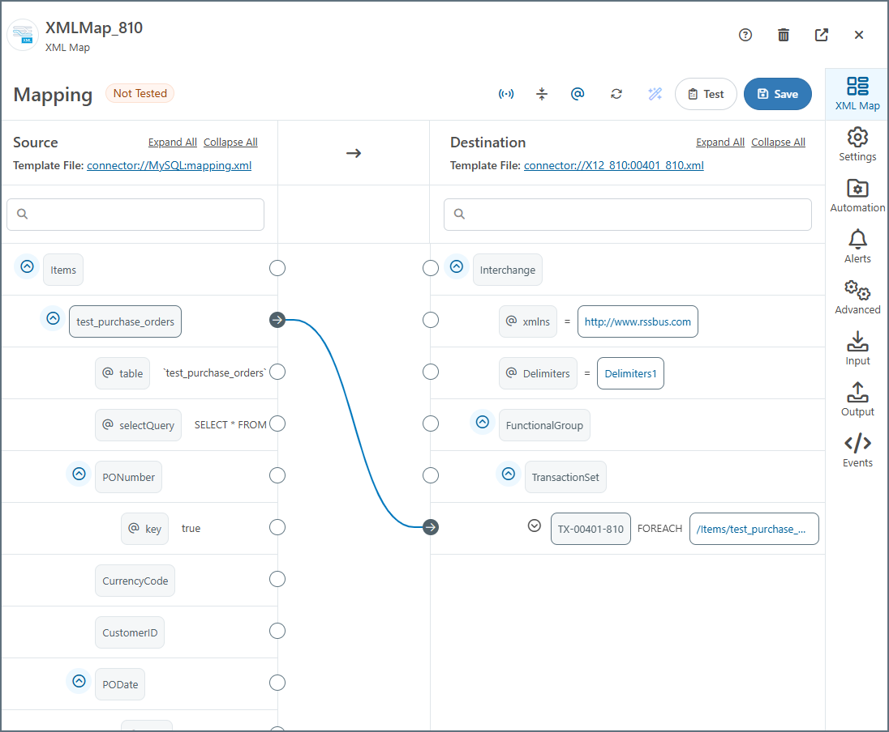
Now drag the test_po_line_items onto the IT1Loop1 element, as shown below:
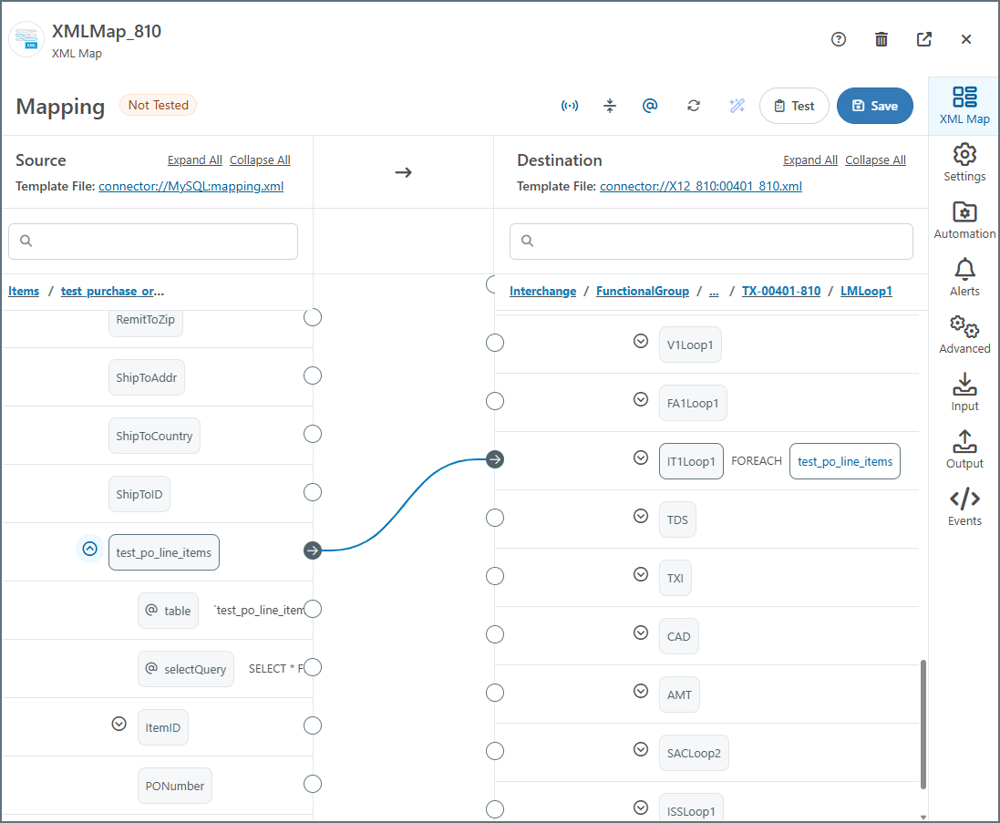
Note: The sample X12 810 document used to create the Destination structure might have multiple IT1Loop1 elements that appear in the mapping designer. You can delete all but one of these elements (right-click the node and select Delete Node) because the Foreach relationship ensures that the correct number of IT1Loop1 elements are generated.
Mapping Leaf Nodes
After you establish the Foreach relationships, you can map the values from leaf nodes in the loops. Mapping leaf nodes determines the values that populate the XML structures created by Foreach loops.
Some leaf node mappings are simple, and others require use of the Node Value Editor or Code Script Editor. The following sections cover each of the common types of leaf node mappings in an EDI document. See Mapping for additional information.
Simple Leaf Node Mappings
When a value from the source should be directly inserted in the resulting output, simply drag a leaf node from the source onto a leaf node in the destination to map the values. This process requires an understanding of the EDI destination format and which values need to be included in the resulting X12 document.
For example, the BIG04 element in the X12 810 holds the PO number for which the invoice is created. This corresponds to the PONumber element from the database output. Drag the PONumber node onto the BIG/BIG04 node to establish this relationship.
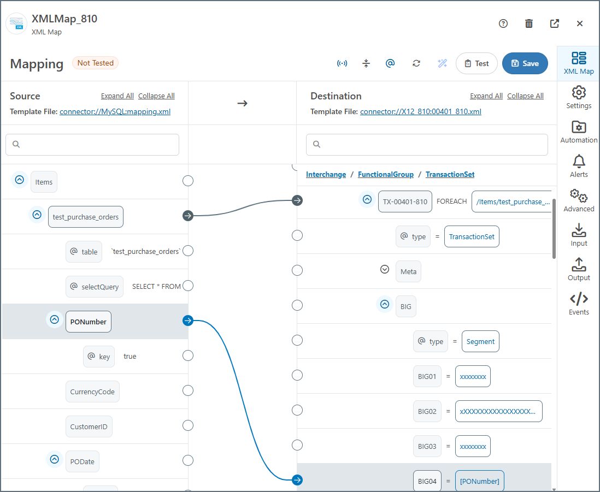
The xpath to the right of a mapped destination node indicates the source of the mapped value (PONumber in the previous image). Leaf node xpaths are relative to the Foreach xpaths in parent nodes (/Items/test_purchase_orders). The xpath from all parent nodes can be concatenated with the xpath in a leaf node to find the full xpath in the source XML for the mapped value: /Items/test_purchase_orders/PONumber.
In this example, other direct leaf node mapping values include the following:
- PODate > BIG/BIG03
- CurrencyCode > CUR/CUR02
- ItemID > IT1Loop1/IT1/IT107
- Quantity > IT1Loop1/IT1/IT102
- PricePerUnit > IT1Loop1/IT1/IT104
- PONumber (again) > IT1Loop1/IT1/IT111
You can drag and drop each of the source values onto the destination EDI document without modification or conditional logic.
Contextual Mappings
Some leaf node mappings depend on other elements in the destination. For example, an N1Loop1 loop in the destination XML is a collection of elements that represent a party or entity in the EDI transaction (such as billing party, shipping party, purchasing party, and so on). The N1Loop1/N1/N101 element indicates the specific role of the party, and the role of the party determines which values should be mapped from the source XML.
In this guide, the source data includes party details for the ship-to party and the remit-to party. To include this data in the EDI output, you need two separate N1Loop1 structures, one with N1Loop1/N1/N101 set to ST (the value for ShipTo) and one with N1Loop1/N1/N101 set to RI (the value for RemitTo). Then you can map the N1Loop1/N1/N102 value for each respective loop by dragging and dropping ShipToID and RemitToID from the source:
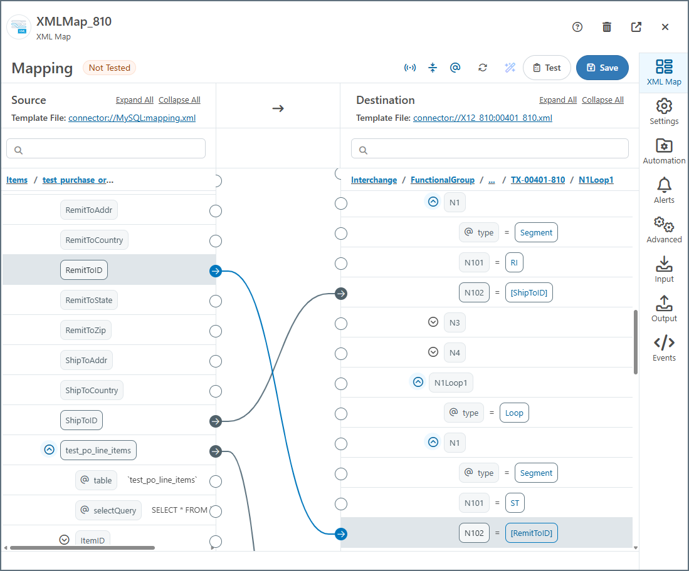
Map the other ship-to data (ShipToAddr, ShipToZip, etc) to the N2, N3, and N4 elements in the N1Loop1 structure where N101 is set to ST. Similarly, map the other remit-to data (RemitToAddr, RemitToZip, and so on) to the appropriate elements in the N1Loop1 structure where N101 is set to RI.
Note: Some EDI loops require multiple distinct nodes in the Destination mapping (like the N1Loop1 loop in this section), and others require only a single node in the destination mapping (like the IT1Loop1 loop from the previous section). The difference depends on whether a Foreach relationship will automatically generate the correct number of output nodes: since the N1Loop1 node does not have a Foreach relationship associated with it, the destination mapping needs to explicitly include the correct number of N1Loop1 nodes.
Simple Calculations
Some values are not pulled directly from the source XML, but are calculated using one or more of the values in the source. For example, each IT1Loop1 loop (each line item) has a TXI/TXI02 element that represents the amount of tax applicable for that line item. The source data includes all of the information necessary to calculate the tax applied to the purchase:
- Price per unit
- Quantity
- Tax percent
However, the calculated tax value is not itself present in the source, so it must be calculated in the XML Map connector.
The Node Value Editor has Formatters that you can use to manipulate data during a mapping. In this case, you need to use the multiply formatter to convert the source data into the destination value.
Begin by mapping the PricePerUnit source node onto the IT1Loop1/TXI/TXI02 destination node. This is a good starting point for generating the appropriate mathematical expression because the price per-unit is one of the input valuables in the expression. Then, click the tablet and pencil icon to the right of the destination node to open the Node Value Editor shown in the following image:
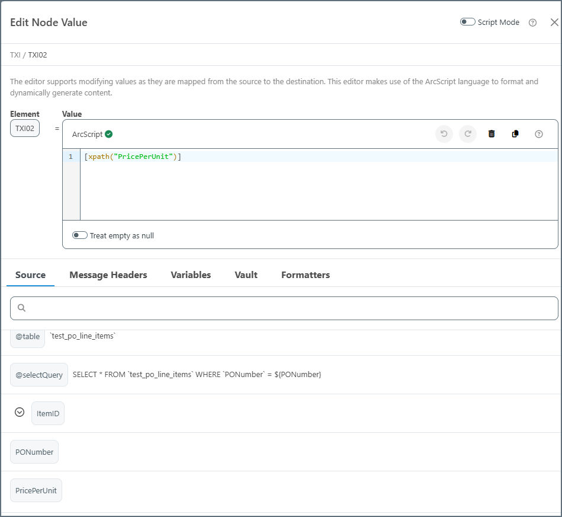
Multiply the price parameter with the quantity to find the total cost of the line item; pass the PricePerUnit value to the multiply formatter using the vertical pipe character (|), then set the parameter of the multiply formatter to the value from the Quantity source element:
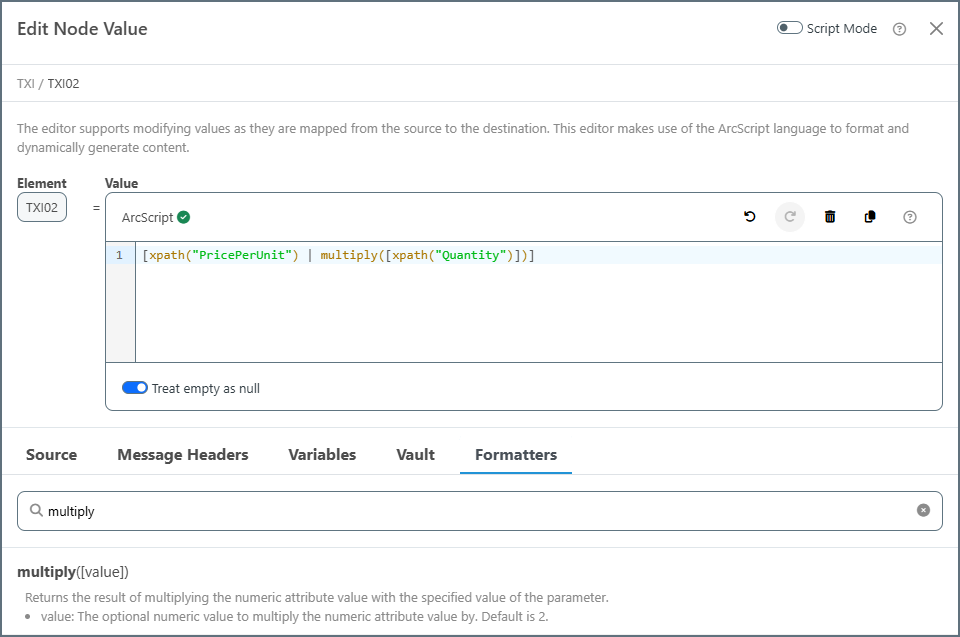
Note: The xpath value for Quantity must be surrounded by square brackets to be interpreted as a dynamic value instead of a string literal.
This total cost value must be multiplied by the TaxPercent, and by .01 to convert from percent to dollars. The complete expression is shown in the following image:
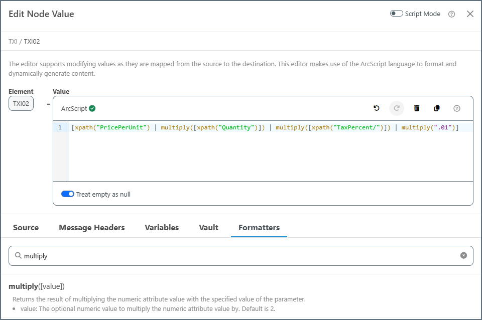
Save the expression and the mapping automatically calculates the appropriate value from the dynamic inputs specified.
Note: As you can see in the previous images, you can easily search for formatters and for data in the source document while you’re using the Node Value Editor.
Cumulative Calculations
The output 810 document has a TDS segment that represents the total monetary value of the invoice. Summing the cost of each line item requires a persistent variable that can be updated in each line item loop.
Scripting is required to store values in variables and retrieve these values later in the mapping. In ArcScript, values are stored as attributes, and items are objects that can have multiple attributes. Item attributes are referenced with the following syntax: item_name.attribute_name
The _map item is a special item that retains attribute values throughout the document mapping. In other words, most attributes (variables) are only preserved for a single node mapping, but attributes of the _map item persist throughout every node in the mapping.
To sum the cost of each line item, set an attribute of the _map item in the line item’s Foreach loop (in the IT1Loop1 loop). Since this scripting is not associated with any specific elements in the IT1Loop1 loop, add a dedicated code script element to the destination mapping. This element does not appear in the resulting EDI document, but indicates that scripting logic is being performed for some other use in the mapping.
First, right-click the IT1Loop1 element and select Add Node > Add Code Script to add a new code script element (you can reposition this element by clicking and dragging it):
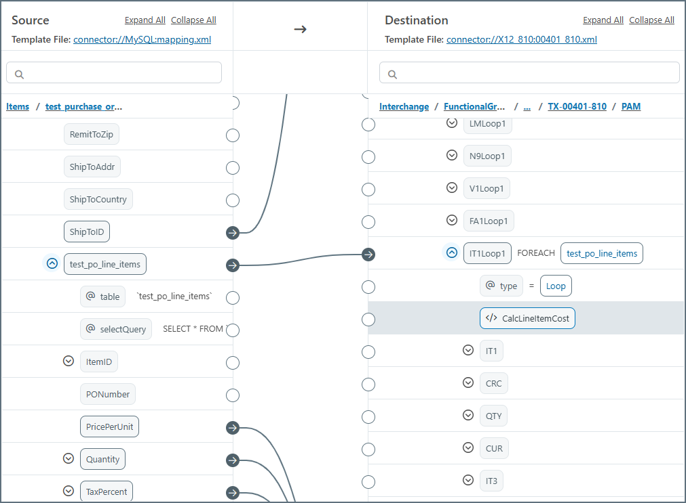
The script needs to calculate the full cost of the line item, which can be found with the following formula:
(PricePerUnit * Quantity) + (PricePerUnit * Quantity * TaxPercent * .01)
Edit the script element to represent the following formula in ArcScript. Name the script element, and click Add Script.
<arc:set attr="lineItemCost" value="[xpath(PricePerUnit) | multiply([xpath(Quantity)])]" />
<arc:set attr="lineItemTax" value="[lineItemCost | multiply([xpath(TaxPercent)]) | multiply(.01) | round(2)]" />
<arc:set attr="_map.costSum" value="[_map.costSum | def(0) | add([lineItemCost]) | add([lineItemTax])]" />
After this script executes during each line item loop, the _map.costSum attribute holds the total cost (including tax) for all line items. To reference this value in the TDS/TDS01 element, click the </> icon to the right of the TDS01 element and set the result.text value to the attribute from earlier:
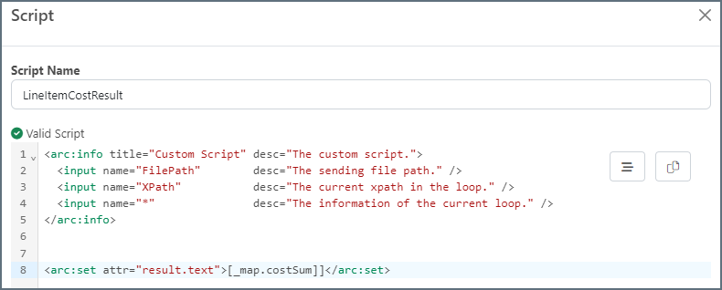
Conditional Mappings
Some nodes require conditional logic to determine whether they should appear in the output, and what value should be set in them. For example, the ITD segment includes data about the terms of the invoice, and this only needs to be included in the output 810 if terms are specified.
You can use the funnel icon next to the ITD element in the destination mapping to apply a condition that determines whether the element (and its children) appears in the output document. Click the icon and add a rule in the mapping condition editor. In this case, the PO terms have a prefix that tells us whether terms must be specified in the invoice:
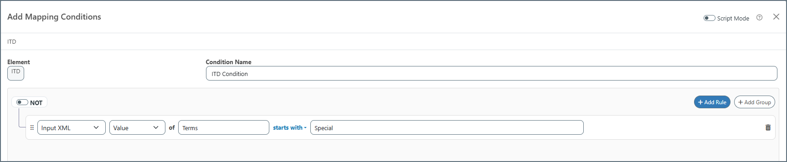
Now that the ITD element only appears if special terms are specified, the ITD01 element needs to hold the appropriate code for the terms. In this example, the following values should be used for the associated terms:
- 02 - Expedited Payment
- 03 - Delayed Payment
- 11 - Alternative Payment Profile
The values in the Terms element of the input data cannot be converted into the ITD01 value using formatters, so you need a custom script to determine the ITD01 mapping. Edit the ITD01 element to open the Node Value Editor, then use the Script Mode toggle to provide the custom script. The following script accomplishes the pattern above:
<arc:set attr="termsCode" value="" />
<arc:set attr="termsInput" value="[xpath(Terms)]" />
<arc:select value="[termsInput]">
<arc:case value="Expedited Payment">
<arc:set attr="termsCode" value="02" />
</arc:case>
<arc:case value="Delayed Payment">
<arc:set attr="termsCode" value="03" />
</arc:case>
<arc:case value="Alternative Payment Profile">
<arc:set attr="termsCode" value="11" />
</arc:case>
</arc:select>
<arc:set attr='result.text'>[termsCode]</arc:set>
The above example uses the arc:select keyword, but you can achieve the same result with a series of arc:if and arc:else statements.
Index Mappings
Some elements in the destination XML need to count the number of loops in a Foreach relationship. For example, the IT1Loop1/IT1/IT101 element holds the line item number, so it needs to increment for each line item in the PO. Similarly, the Meta/ST02 element needs to increment for each PO in the document.
The _index attribute is a special variable that holds the index of the most local Foreach loop relationship (for nested Foreach loops, _index refers to the innermost loop). As long as the Foreach relationships are established correctly, you can set both Meta/ST02 and IT1Loop1/IT1/IT101 to the following value to correctly count the number of POs and line items:
[_index]
This special attribute is also available in any custom scripting environment, if the current index in a Foreach loop is relevant for more advanced mapping logic.
Generating a Date in the Mapping
Some elements in the destination XML do not reference the source data at all. The BIG/BIG01 element represents the date of the invoice, which is not available until the current mapping step.
You can use the special now date formatter to generate a new date value for the current datetime. Like all formatters, this is available in the Node Value Editor for any node mapping.
All formatters require an input attribute to format. Often, during an XML mapping, the input attribute is a value retrieved with the xpath formatter (in other words, a value parsed from the source XML). In this case, it does not matter what attribute is passed to the now formatter, since it always returns the current datetime. As a result, you can pass the default _ item as a placeholder:
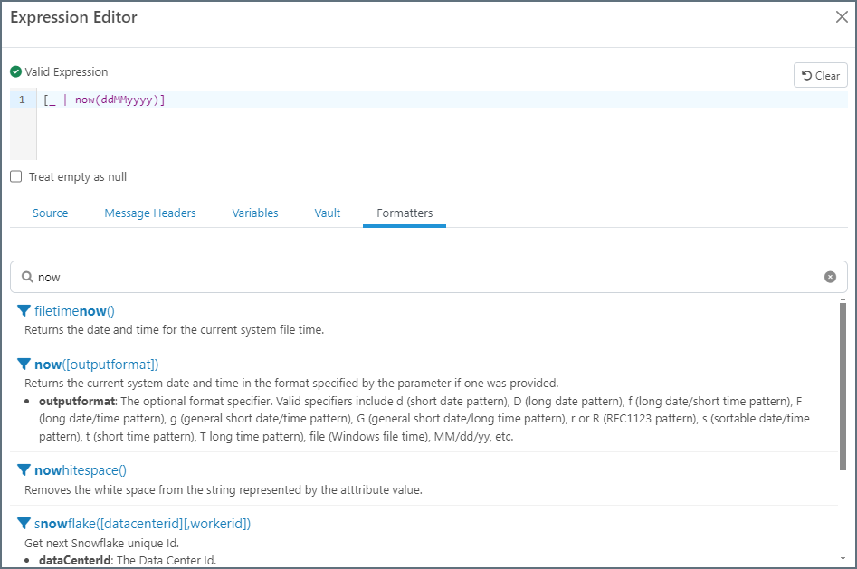
Note: The parameter passed to the now formatter defines the output format of the date.
Counting Line Items and Total Cost
The CTT segment includes elements for counting the total number of line items and a hash value that represents the total cost of the items. The approach to calculating these values is similar to that which is described in Cumulative Calculations.
The relevant values must be calculated in the section of the mapping where line item data is available (the IT1Loop1 section), and then referenced later in the CTT mapping. This requires a custom script that stores the values in the special _map item.
In the IT1Loop1 loop (which is mapped with a Foreach relationship to the test_po_line_items records), right click and select Add Node > Add Code Script to add a new node. The script is executed each time the mapping loops; in other words, it executes once for each line item. To calculate the values, the number of lines and total cost need to be summed and then stored in an attribute of the _map item.
The line item count is calculated with a simple counter, and the cost can be calculated with the same formula used in Cumulative Calculations.
<arc:set attr="_map.lineItemCount" value= "[_map.lineItemCount | def(0) | add(1)]">
<arc:set attr="currentCost" value="[xpath(PricePerUnit) | multiply([xpath(Quantity)])]" />
<arc:set attr="currentTax" value="[currentCost | multiply([xpath(TaxPercent)]) | multiply(.01) | round(2)]" />
<arc:set attr="_map.totalCost" value="[_map.totalCost | def(0) | add([lineItemCost]) | add([lineItemTax])]" />
The CTT01 element can map directly to the _map.lineItemCount. Open the script editor and reference the attribute from earlier:
<arc:set attr="result.text">[_map.lineItemCount]</arc:set>
The CTT02 element can map to the _map.totalCost. However, the CTT hash requires ignoring the decimal point, which is equivalent here to multiplying the cost by 100:
<arc:set attr="result.text">[_map.lineItemCount | multiply(100)]</arc:set>
Flow Summary
The MySQL connector generates XML from PO data in a back-end system, and this XML is mapped to an EDI format by the XML Map connector. The EDI XML is then passed to the X12 connector to add interchange headers and convert the XML into X12 format.
The most involved step of this flow is the creation of the XML mapping. Mapping requires establishing the Foreach relationships between parent nodes, then mapping individual leaf nodes with a combination of dragging-and-dropping, using the Node Value Editor, adding conditionals, and writing custom scripts.
Sample Data
Database XML Structure
<Items>
<test_purchase_orders selectQuery="SELECT * FROM `test_purchase_orders` WHERE `Processed` = 0">
<PONumber key="true" />
<CurrencyCode />
<CustomerID />
<PODate type="datetime" />
<Processed type="int" updateValue="1" />
<RemitToAddr />
<RemitToCountry />
<RemitToID />
<RemitToState />
<RemitToZip />
<ShipToAddr />
<ShipToCountry />
<ShipToID />
<ShipToState />
<ShipToZip />
<Terms />
<test_po_line_items selectQuery="SELECT * FROM `test_po_line_items` WHERE `PONumber` = ${PONumber}">
<ItemID key="true" />
<PONumber />
<PricePerUnit type="double" />
<Quantity type="int" />
<TaxPercent type="double" />
</test_po_line_items>
</test_purchase_orders>
</Items>
X12 810
ISA*00* *00* *ZZ*VENDOR *ZZ*AMAZON *090322*1001*U*00400*000001631*0*T*>~
GS*IN*VENDOR*AMAZON*20090322*1001*480*X*004010~
ST*810*0001~
BIG*20090320*5002841638*20090311*Q6515853~
CUR*BT*CAD~
N1*RI*VENDORNAME~
N3*PO BOX 1234~
N4*TORONTO*ON*M5W 5M5*CA~
N1*ST*AMAZON CANADA~
N3*500 MCCARTHY DR*FAIRVIEW BUSINESS PARK~
N4*MISSISSAUGA*ON*L5R 3W5*CA~
ITD*01*3*****60~
IT1*1*4*EA*12.6*NT*UP*786932788990*VN*1012380100000*PO*Q2515852~
TXI*GS*2.52*5~
IT1*2*30*EA*29.5*NT*UP*786936725951*VN*1000570100000*PO*Q2515852~
TXI*GS*44.25*5~
IT1*3*90*EA*22.5*NT*UP*782936735321*VN*0543900100000*PO*Q2515852~
TXI*GS*101.25*5~
IT1*4*5*EA*29.5*NT*UP*786936782268*VN*1000570200000*PO*Q2515852~
TXI*GS*7.38*5~
TDS*326330~
TXI*GS*155.4*5*****3108*954090650~
CTT*4*129~
SE*22*0001~
GE*1*480~
IEA*1*000001631~